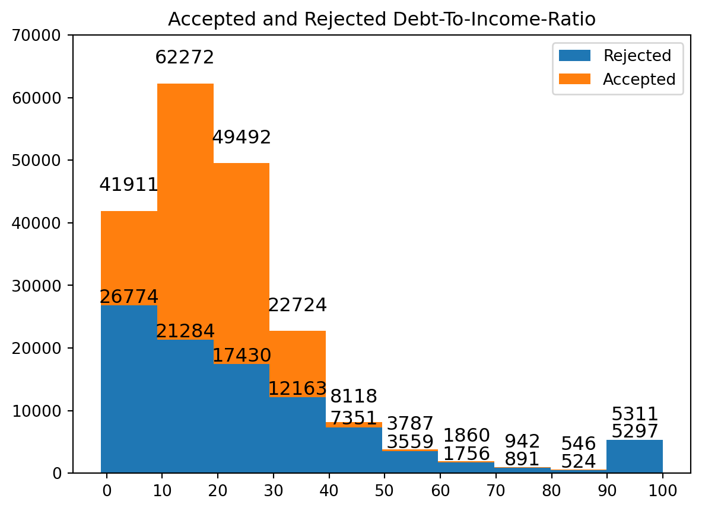

LendingClub is a financial technology company that has had over 4 million members since 2007. The ‘fintech’ company offers customers banking and loan opportunities. Something that has interested me in recent years has revolved around understanding how loan applicants are accepted. Through a Kaggle dataset, I was able to track loan applicants that applied for loans through LendingClub (reference). The data spans 11 years, from 2007 to 2018, and contains two tables: a rejected and an accepted loan applicant table.
Note
You can find the link to my full code and documentation here: GitHub Repository
The accepted applicant table contains approximately 2 million rows and lists over 150 features. The rejected applicant table extends out to about 27 million rows, and has exactly 9 feastures. To understand all of the different features, a separate Kaggle resource was used that identifies the columns that appear in the dataset (reference).
1.1 Goals and Introduction to Features
Although some features were easy to understand, many columns were entreched in financial terminology or were related to the applicant following their acceptance. My goal for the analysis was to focus on features that were easily understandable, and were characteristics of the customer. By the end of my analysis, I wanted to describe loan applicants and build a model using some of the features. I defined seven different questions that tackled unique aspects of the data.
Question 1: Is employment length related to the acceptance of loans?
Question 2: Is there a tendency for specific loans to be given during certain months?
Question 3: What is the frequency of accepted and rejected loans throughout the United States?
Question 4: Does the ratio of the amount funded over the amount requested change based on hardship flag, home ownership, and application type?
Question 5: Does an applicant’s FICO score change the interest rate they receive?
Question 6: Is there a bound to the Debt-To-Income (DTI) ratio so customers below a limit cannot be accepted?
Question 7: Using the matching features between accepted and rejected data, can the data effectively predict whether a candidate will be accepted or rejected?
1.2 Preprocessing the Data
Before answering the above questions, the data needed to be shaped and organized. A mix of cleaning techniques were used to break the raw csv files into distinct tables: a ZIP Code table, a model table, and an accepted applicant table.
Important
Not every piece of processing code will be displayed. Key decisions and general steps will be listed; however, I want to limit the amount of code listed here and encourage you to visit the repository.
Code
# Importing Modulesimport pandas as pd# Reading Dataaccepted = pd.read_csv("../accepted_2007_to_2018Q4.csv")rejected = pd.read_csv("../rejected_2007_to_2018Q4.csv")# Adding Result Columnaccepted['Applicant_Result'] =1rejected['Applicant_Result'] =0
Note
The two files being imported are large in size and could not be uploaded to the Github repository.
Now that the files have been imported, the first thing I do is create a csv for ZIP Codes. Both raw tables contain applicants’ first three digits of their ZIP Code. A new dataset will combine both ZIP Code columns and applicant result columns. There are a few missing values in the data that will be dropped.
The next table I will be making pulls accepted loan applications. To clean the columns I defined how many missing values were in each feature. Then, I decided to remove columns that contained at least 30% missing values.
After looking over the columns, I reduced the number of columns even further. I selected columns that would be most related to the questions I planned to answer. Then, I took the percentage of values I would have left if I decided to drop the NA rows. With a remaining 91%, I decided it would be better to drop the missing values instead of attempting to replace them. Lastly, I change the type of the FICO score columns and the policy code to integers. The final table consisted of 17 features.
Lastly, I wanted a build a table that combined both accpeted and rejected loan applicants. Of the now 10 columns in the rejected table, added the applicant result, I dropped the Risk_Score column because it contained to many missing values (~18 million). The remaining columns will have their missing values dropped. Another edit that needed to be made was changing the debt-to-income ratio column to be a float type. To do this, I removed the percent sign and converted the type.
Next, I used the sample method to take 100000 rows from each table and concatenated them to form a new table. Finally, all three tables were written as csv files.
2 Is employment length related to the acceptance of loans?
To analyze the employment length, I bult a grouped bar chart comparing loan applicants that were accepted and rejected. This was taken using the model data that randomly sampled both candidates.
Code
import pandas as pdimport numpy as npimport matplotlib.pyplot as pltdf = pd.read_csv("../model_only_data.csv")question_one = df[['applicant_result', 'emp_length']]x = np.arange(len(pd.unique(question_one['emp_length'])))y1 = question_one['emp_length'][question_one['applicant_result'] ==1].value_counts().sort_index().valuesy2 = question_one['emp_length'][question_one['applicant_result'] ==0].value_counts().sort_index().valueswidth =0.2plt.bar(x-0.2, y1, width, color='cyan')plt.bar(x, y2, width, color='orange')plt.xticks(x, question_one['emp_length'].value_counts().sort_index().index, rotation=90)plt.xlabel("Self-Reported Employee Length")plt.ylabel("Counts")plt.title("Accepted Vs. Rejected Based on Employment Length")plt.legend(["Accepted", "Rejected"])plt.show()

Based on the results, many rejected candidates appear to have been at their jobs for a small amount of time. There is also a noticeble count of candidates that were accepted displaying an employment length greater than 10 years.
3 Is there a tendency for specific loans to be given during certain months?
Utilizing natural language processing and some manual identification, I was able to group many of the different reasons applicants applied for loans. This was reflected in a rose chart that is labeled by month and takes all accepted applicant data from 2007-2018.
*Will be adding a GIF describing years from 2007-2018
Looking at the rose chart, we can observe a couple things. Firstly, three of the 12 months have a noticeable drop in overall accepted applicant counts. Why is there a drop? It is not entirely clear. Nothing jumps out as an explanation while doing some Googling. It might be a situation unique to LendingClub.
Another note, debt and credit related issues form a large portion of the counts per month. When using natural language processing and manual identification, it appears that
4 What is the frequency of accepted and rejected loans throughout the United States?
The goal for this question is to look at the overall acceptance rate of each ZIP Code across the Unites States’ mainland. Using census data collected by the U.S., I was able to group by ZIP Codes and join the census data.
One of the key things that stands out is the large, scary space outlining the state of Iowa. As of the dates collected from the Kaggle dataset, Iowa did not allow their citizens to work with LendingClub. This is the most likely explanation for the very abismal acceptance rate.
5 Does the ratio of the amount funded over the amount requested change based on hardship flag, home ownership, and application type?
This question analyzes accepted loan applicants in an attempt to understand what candidates are being accepted.
Many of the accepted candidates with the highest FICO scores own homes and
6 Does an applicant’s FICO score change the interest rate they receive? What about the funding-requested ratio?
7 Is there a bound to the Debt-To-Income (DTI) ratio so customers below a limit cannot be accepted?
8 Using the matching features between accepted and rejected data, can the data effectively predict whether a candidate will be accepted or rejected?
Model Equations to mysuper SUPER awesome blog post! \[x^2 = 1\]
8.1 References
Note
Note that there are five types of callouts, including: note, tip, warning, caution, and important.
Tip With Caption
This is an example of a callout with a caption.
For your reference, here’s an example of a Python code cell in Quarto, along with a figure that gets generated, along with a caption and a label so that it can be referred to automatically as “Figure 1” (or whatever) in the writeup.
For a demonstration of a line plot on a polar axis, see ?@fig-polar.
Here’s an example of citing a source (see phil99?). Be sure the source information is entered in “BibTeX” form in the references.bib file.
The bibliography will automatically get generated. Any sources you cite in the document will be included. Other entries in the .bib file will not be included.
Source Code
---title: "Understanding LendingClub Loan Application Data"subtitle: "Spring 2023"author: "Thomas Ortega"bibliography: references.bibnumber-sections: trueformat: html: theme: default rendering: embed-resources code-fold: true code-tools: true pdf: defaultjupyter: python3---# LendingClub Loan ApplicationsLendingClub is a financial technology company that has had over 4 million members since 2007. The 'fintech' company offers customers banking and loan opportunities. Something that has interested me in recent years has revolved around understanding how loan applicants are accepted. Through a Kaggle dataset, I was able to track loan applicants that applied for loans through LendingClub (reference). The data spans 11 years, from 2007 to 2018, and contains two tables: a rejected and an accepted loan applicant table.:::{.callout-note}You can find the link to my full code and documentation here: [GitHub Repository](https://github.com/tortega-24/capstone-loan-applicants/tree/main):::The accepted applicant table contains approximately 2 million rows and lists over 150 features. The rejected applicant table extends out to about 27 million rows, and has exactly 9 feastures. To understand all of the different features, a separate Kaggle resource was used that identifies the columns that appear in the dataset (reference). ## Goals and Introduction to FeaturesAlthough some features were easy to understand, many columns were entreched in financial terminology or were related to the applicant following their acceptance. My goal for the analysis was to focus on features that were easily understandable, and were characteristics of the customer. By the end of my analysis, I wanted to describe loan applicants and build a model using some of the features. I defined seven different questions that tackled unique aspects of the data.**Question 1:** Is employment length related to the acceptance of loans?**Question 2:** Is there a tendency for specific loans to be given during certain months?**Question 3:** What is the frequency of accepted and rejected loans throughout the United States? **Question 4:** Does the ratio of the amount funded over the amount requested change based on hardship flag, home ownership, and application type?**Question 5:** Does an applicant's FICO score change the interest rate they receive?**Question 6:** Is there a bound to the Debt-To-Income (DTI) ratio so customers below a limit cannot be accepted?**Question 7:** Using the matching features between accepted and rejected data, can the data effectively predict whether a candidate will be accepted or rejected?## Preprocessing the DataBefore answering the above questions, the data needed to be shaped and organized. A mix of cleaning techniques were used to break the raw csv files into distinct tables: a ZIP Code table, a model table, and an accepted applicant table.:::{.callout-important}Not every piece of processing code will be displayed. Key decisions and general steps will be listed; however, I want to limit the amount of code listed here and encourage you to visit the repository.:::```{python}#| output: false# Importing Modulesimport pandas as pd# Reading Dataaccepted = pd.read_csv("../accepted_2007_to_2018Q4.csv")rejected = pd.read_csv("../rejected_2007_to_2018Q4.csv")# Adding Result Columnaccepted['Applicant_Result'] =1rejected['Applicant_Result'] =0```:::{.callout-note}The two files being imported are large in size and could not be uploaded to the Github repository.:::Now that the files have been imported, the first thing I do is create a csv for ZIP Codes. Both raw tables contain applicants' first three digits of their ZIP Code. A new dataset will combine both ZIP Code columns and applicant result columns. There are a few missing values in the data that will be dropped.```{python}rejected['Zip Code'].isnull().sum()/len(rejected)accepted['zip_code'].isnull().sum()/len(accepted)zip_df = rejected[['Zip Code', 'Applicant_Result']].rename(columns= {"Zip Code": "zip_code", "Applicant_Result": "applicant_result"})zip_df = pd.concat([zip_df, accepted[['zip_code', 'Applicant_Result']].rename(columns={"Applicant_Result": "applicant_result"})] , axis=0)zip_df.dropna(axis=0, inplace=True)zip_df.reset_index(drop=True, inplace=True)zip_df.head()```The next table I will be making pulls accepted loan applications. To clean the columns I defined how many missing values were in each feature. Then, I decided to remove columns that contained at least 30% missing values.```{python}col_to_be_dropped = []for column in accepted.columns:if (accepted[column].isnull().sum()/len(accepted)) >0.3: col_to_be_dropped.append(column)trimmed_accepted = accepted.drop(col_to_be_dropped, axis =1)trimmed_accepted.shape```After looking over the columns, I reduced the number of columns even further. I selected columns that would be most related to the questions I planned to answer. Then, I took the percentage of values I would have left if I decided to drop the NA rows. With a remaining 91%, I decided it would be better to drop the missing values instead of attempting to replace them. Lastly, I change the type of the FICO score columns and the policy code to integers. The final table consisted of 17 features.```{python}#| output: falsecolumns_needed = ['loan_amnt', 'title', 'last_fico_range_low', 'last_fico_range_high','dti', 'zip_code', 'addr_state', 'emp_length', 'emp_title', 'funded_amnt', 'hardship_flag', 'home_ownership', 'loan_status', 'application_type', 'issue_d', 'policy_code', 'Applicant_Result']# accepted_project_cut = accepted_project.dropna(axis=0)# len(accepted_project_cut)/len(accepted_project) = 0.9168417229876927accepted_project = trimmed_accepted[columns_needed]accepted_project.dropna(axis=0, inplace=True)accepted_project['last_fico_range_low'] = accepted_project['last_fico_range_low'].astype('int64')accepted_project['last_fico_range_high'] = accepted_project['last_fico_range_high'].astype('int64')accepted_project['policy_code'] = accepted_project['policy_code'].astype('int64')accepted_project.reset_index(drop=True, inplace=True)```Lastly, I wanted a build a table that combined both accpeted and rejected loan applicants. Of the now 10 columns in the rejected table, added the applicant result, I dropped the Risk_Score column because it contained to many missing values (~18 million). The remaining columns will have their missing values dropped. Another edit that needed to be made was changing the debt-to-income ratio column to be a float type. To do this, I removed the percent sign and converted the type. ```{python}#| output: falsetrimmed_rejected = rejected.drop(['Risk_Score'], axis=1)trimmed_rejected['Debt-To-Income Ratio'] = trimmed_rejected['Debt-To-Income Ratio'].str.replace('%', '', regex=True)trimmed_rejected['Debt-To-Income Ratio'] = trimmed_rejected['Debt-To-Income Ratio'].astype('float64')```Next, I used the sample method to take 100000 rows from each table and concatenated them to form a new table. Finally, all three tables were written as csv files.# Is employment length related to the acceptance of loans?To analyze the employment length, I bult a grouped bar chart comparing loan applicants that were accepted and rejected. This was taken using the model data that randomly sampled both candidates.```{python}import pandas as pdimport numpy as npimport matplotlib.pyplot as pltdf = pd.read_csv("../model_only_data.csv")question_one = df[['applicant_result', 'emp_length']]x = np.arange(len(pd.unique(question_one['emp_length'])))y1 = question_one['emp_length'][question_one['applicant_result'] ==1].value_counts().sort_index().valuesy2 = question_one['emp_length'][question_one['applicant_result'] ==0].value_counts().sort_index().valueswidth =0.2plt.bar(x-0.2, y1, width, color='cyan')plt.bar(x, y2, width, color='orange')plt.xticks(x, question_one['emp_length'].value_counts().sort_index().index, rotation=90)plt.xlabel("Self-Reported Employee Length")plt.ylabel("Counts")plt.title("Accepted Vs. Rejected Based on Employment Length")plt.legend(["Accepted", "Rejected"])plt.show()```Based on the results, many rejected candidates appear to have been at their jobs for a small amount of time. There is also a noticeble count of candidates that were accepted displaying an employment length greater than 10 years.# Is there a tendency for specific loans to be given during certain months?Utilizing natural language processing and some manual identification, I was able to group many of the different reasons applicants applied for loans. This was reflected in a rose chart that is labeled by month and takes all accepted applicant data from 2007-2018.```{python}```*Will be adding a GIF describing years from 2007-2018Looking at the rose chart, we can observe a couple things. Firstly, three of the 12 months have a noticeable drop in overall accepted applicant counts. Why is there a drop? It is not entirely clear. Nothing jumps out as an explanation while doing some Googling. It might be a situation unique to LendingClub. Another note, debt and credit related issues form a large portion of the counts per month. When using natural language processing and manual identification, it appears that # What is the frequency of accepted and rejected loans throughout the United States?The goal for this question is to look at the overall acceptance rate of each ZIP Code across the Unites States' mainland. Using census data collected by the U.S., I was able to group by ZIP Codes and join the census data.```{python}```One of the key things that stands out is the large, scary space outlining the state of Iowa. As of the dates collected from the Kaggle dataset, Iowa did not allow their citizens to work with LendingClub. This is the most likely explanation for the very abismal acceptance rate.# Does the ratio of the amount funded over the amount requested change based on hardship flag, home ownership, and application type?This question analyzes accepted loan applicants in an attempt to understand what candidates are being accepted.```{python}```Many of the accepted candidates with the highest FICO scores own homes and # Does an applicant's FICO score change the interest rate they receive? What about the funding-requested ratio?```{python}```# Is there a bound to the Debt-To-Income (DTI) ratio so customers below a limit cannot be accepted?```{python}```# Using the matching features between accepted and rejected data, can the data effectively predict whether a candidate will be accepted or rejected?```{python}```**Model Equations** to *my* ~~super~~ SUPER awesome `blog` post!$$x^2 = 1$$## References:::{.callout-note}Note that there are five types of callouts, including:`note`, `tip`, `warning`, `caution`, and `important`.::::::{.callout-tip}## Tip With CaptionThis is an example of a callout with a caption.:::For your reference, here's an example of a Python code cell in Quarto, along with a figure that gets generated, along with a caption and a label so that it can be referred to automatically as "Figure 1" (or whatever) in the writeup.For a demonstration of a line plot on a polar axis, see @fig-polar.Here's an example of citing a source [see @phil99, pp. 33-35]. Be sure the source information is entered in "BibTeX" form in the `references.bib` file.The bibliography will automatically get generated. Any sources you cite in the document will be included. Other entries in the `.bib` file will not be included.